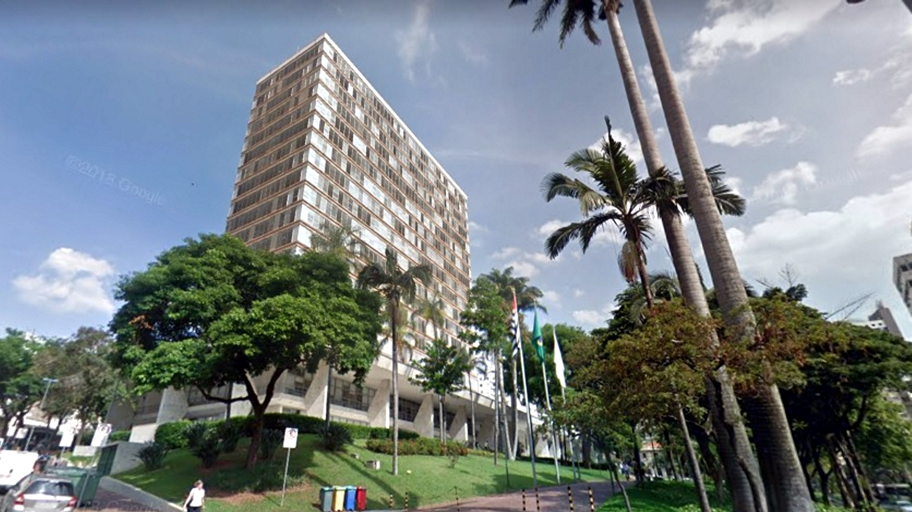
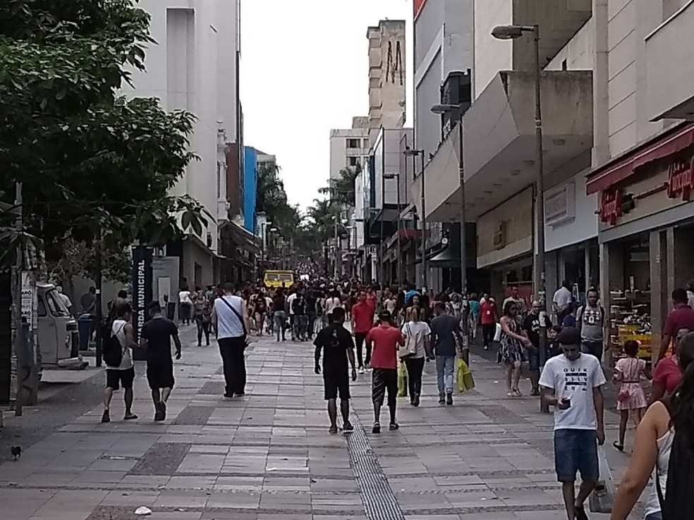
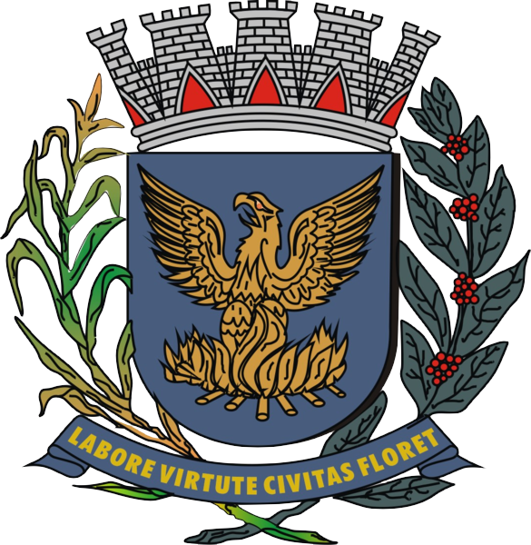
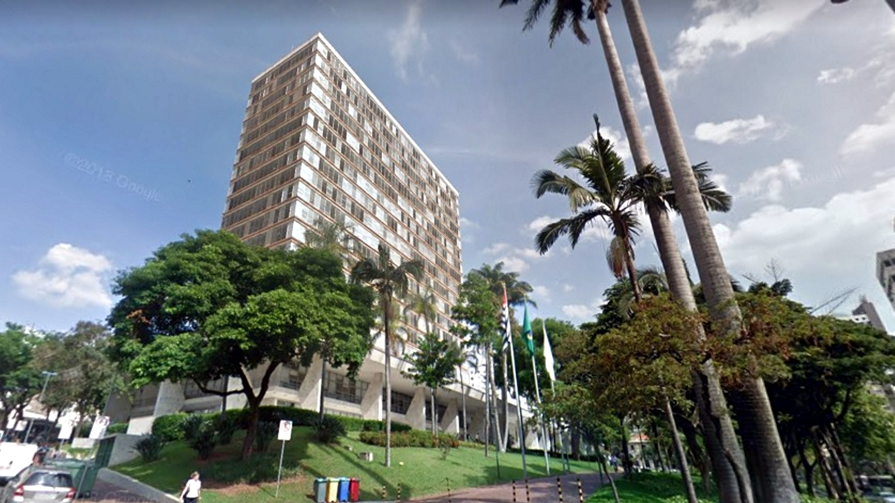
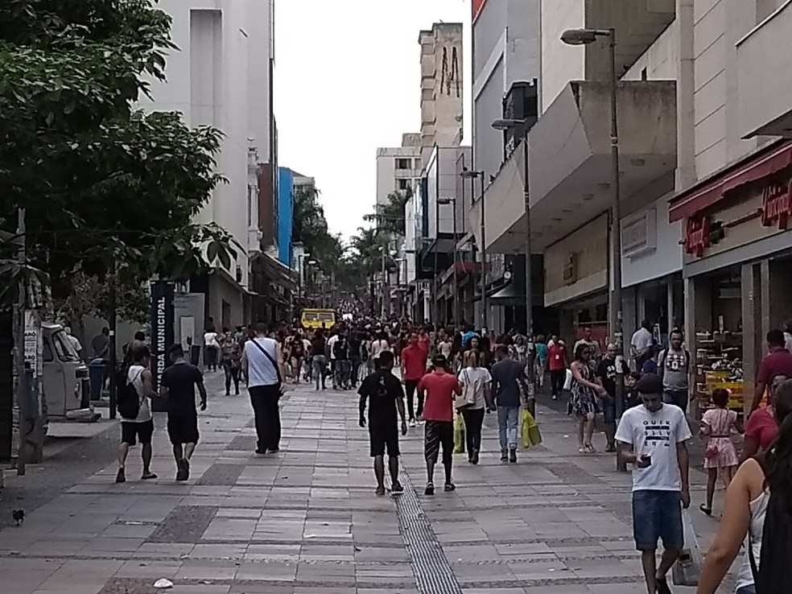
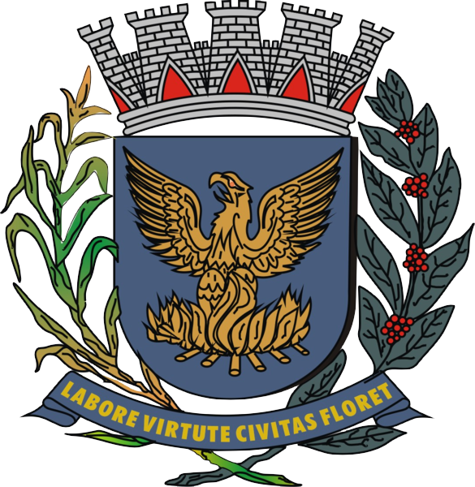
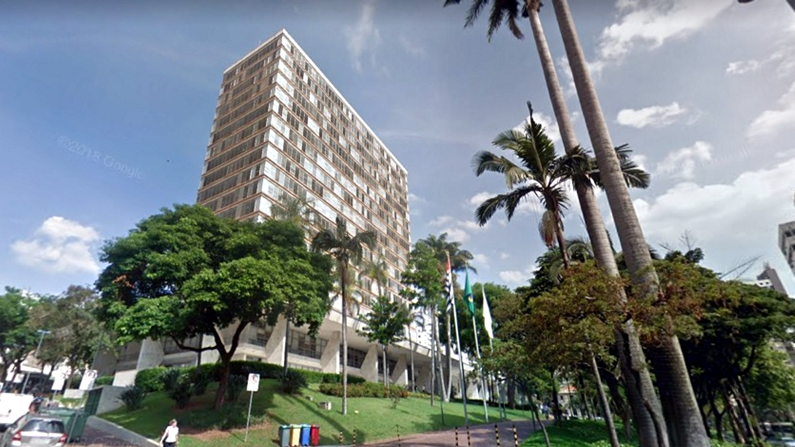
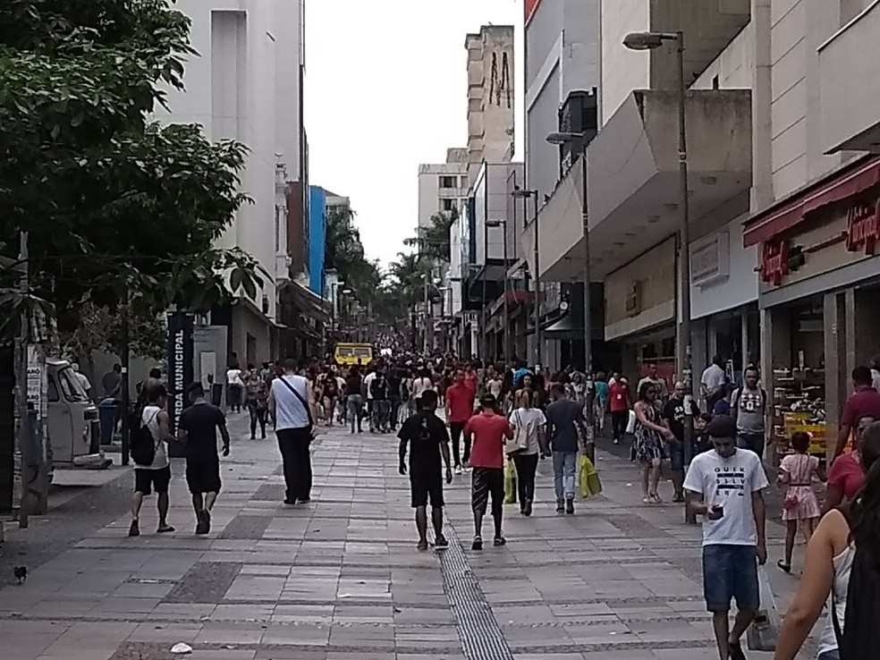
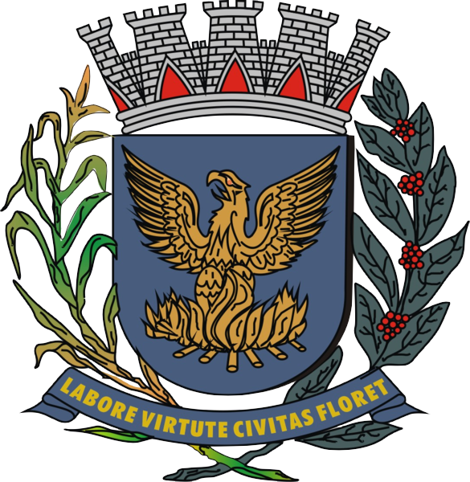
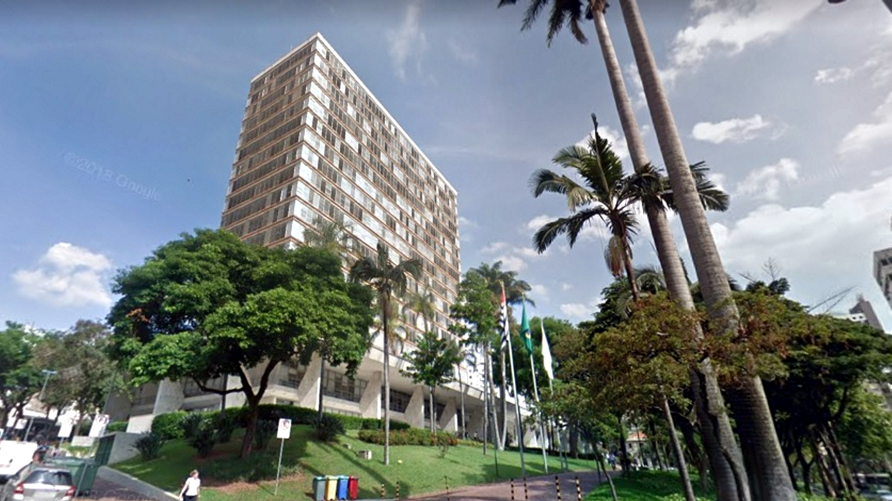
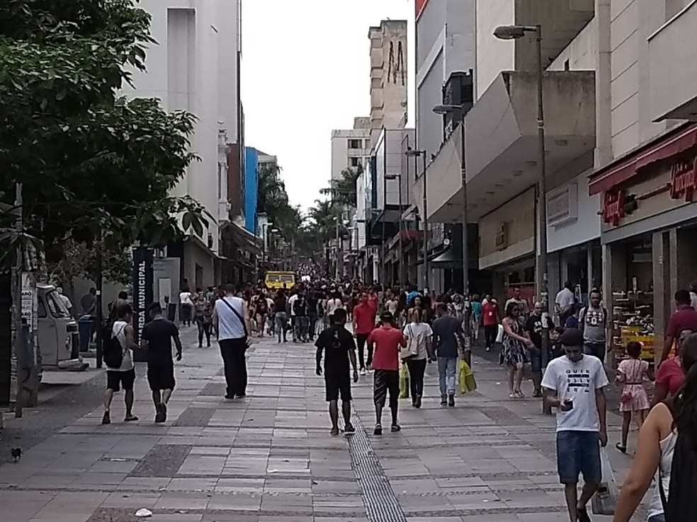
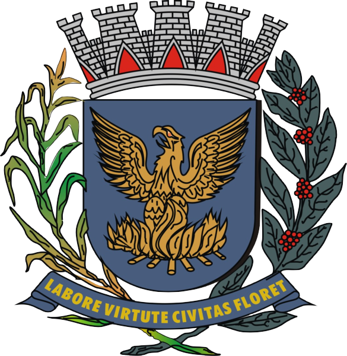
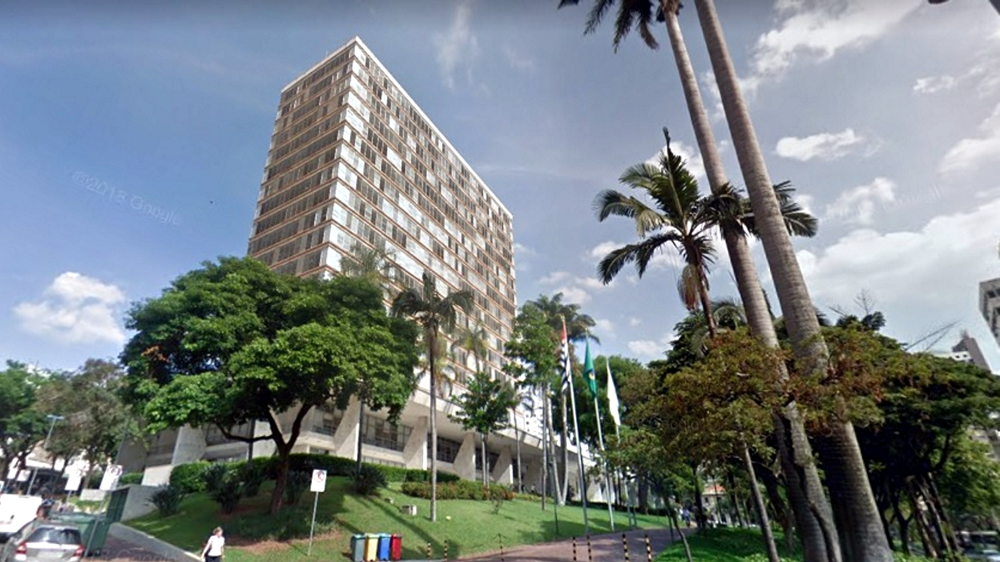
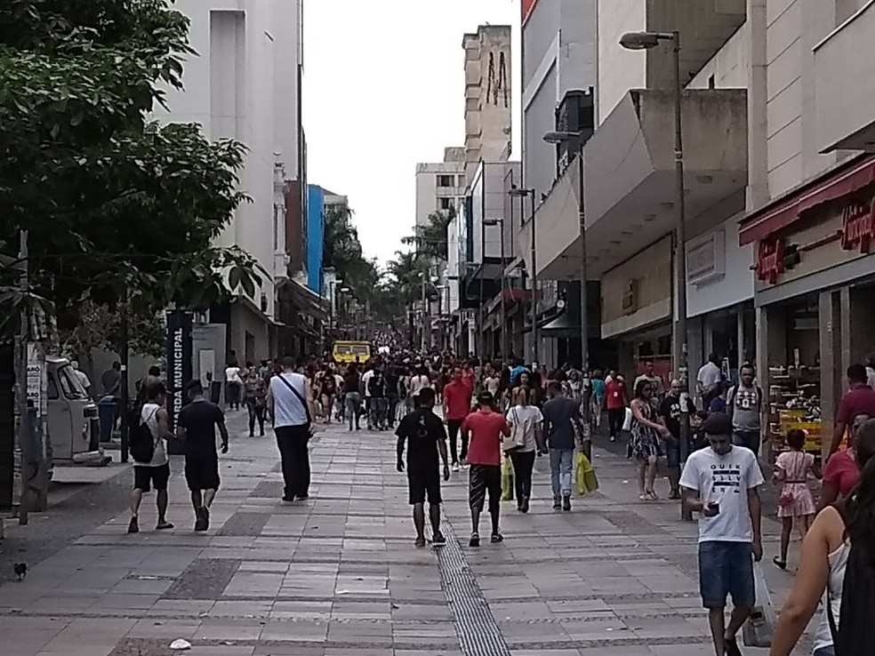
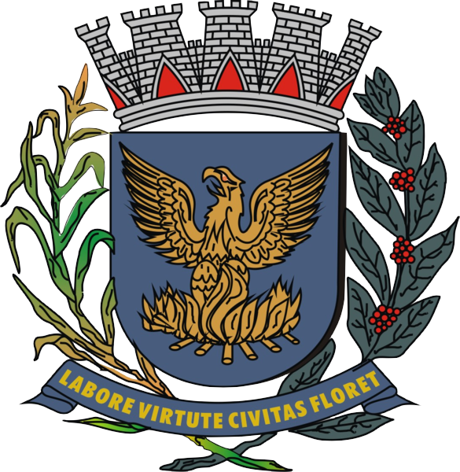
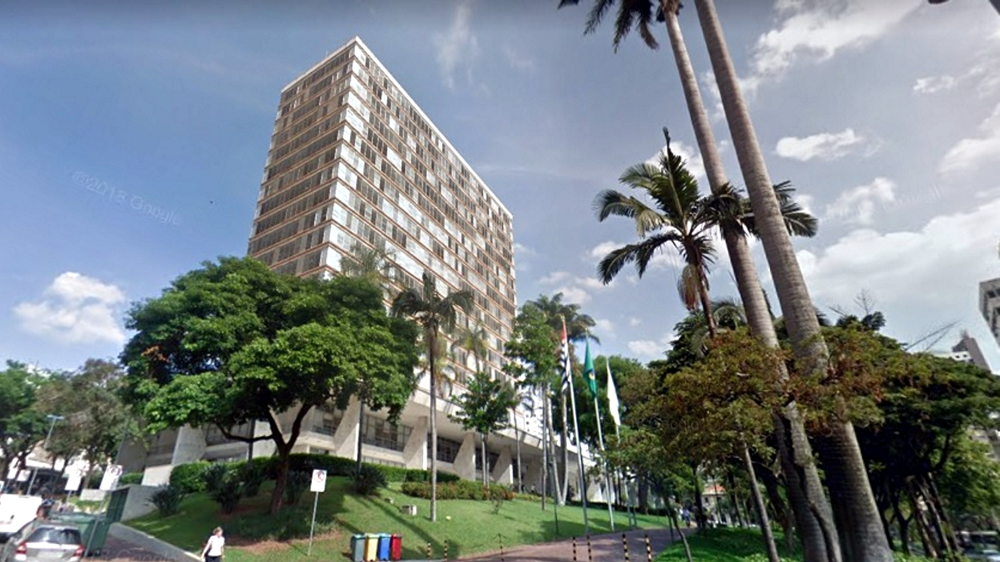
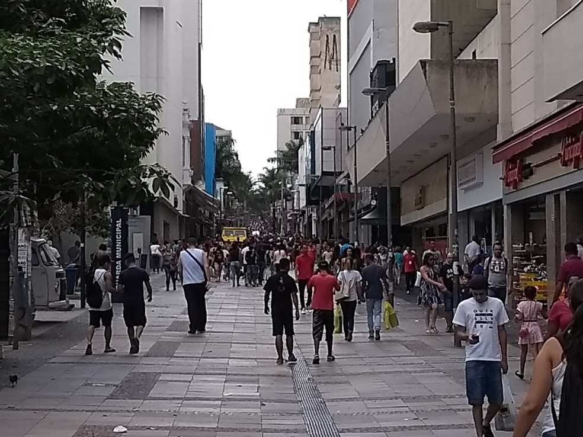
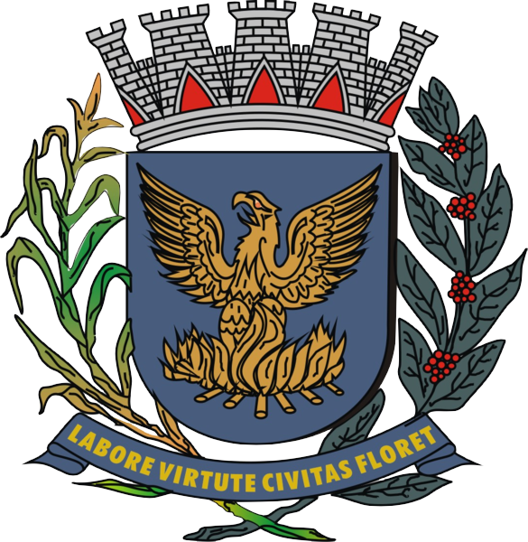
Campinas foi fundada em 14 de julho de 1774. Entre o final do século XVIII e o começo do século XX, a cidade teve o café e a cana-de-açúcar como importantes atividades econômicas. Porém, desde a década de 1930, a indústria e o comércio são as principais fontes de renda, sendo considerada um polo industrial regional.Com o décimo primeiro maior PIB entre os municípios do país, é a primeira cidade brasileira a se tornar metrópole sem ser uma capital, exercendo significativa influência nacional.
Na Lagoa do Taquaral se encontra o Planetário, balneário municipal, museu dinâmico da ciência, uma pista de aeromodelismo, kartódromo (desativado mas pode ser utilizado por quem tiver seu próprio kart, bike, patins), ciclovia, pista de patinação, 16 quadras poliesportivas, relógio solar
O Mercado Municipal foi projetado pelo arquiteto Ramos de Azevedo e inaugurado em 1908 pelo prefeito Orosimbo Maia. O edifício segue estilo neomouristico, construído inicialmente para servir como armazém de estocagem dos produtos transportados pela ferrovia Funilense, funcionava no início do século 20 como entreposto de açúcar da Estrada de Ferro Funilense que ia até o Porto de Santos.
A Estação Anhumas é uma estação de trem no município de Campinas, mantida pela Associação Brasileira de Preservação Ferroviária, ponto inicial de uma linha turística com locomotivas a vapor que vai até Jaguariúna.A estação possui esse nome em função da proximidade do Ribeirão Anhumas, que por sua vez recebeu esse nome por ser sido no passado o pouso invernal das anhumas, uma espécie de ave pantaneira.
| Nome do prefeito | Ano eleito | Partido | |
|---|---|---|---|
| Dário Saadi | 1º de janeiro de 2021 | Republicanos | Atual |
| Jonas Donizette | 1º de janeiro de 2017 | PSB | |
| Jonas Donizette | 1º de janeiro de 2013 | PSB | |
| Pedro Serafim Júnior | 26 de dezembro de 2011 | PDT |
| Dados tecnicos baseados em 6 pontos , sendo eles Populaçao, trabalho e rendimento, educação, economia, saúde, território e ambiente | ||
|---|---|---|
| POPULAÇÃO | População estimada [2021] | 1.223.237 pessoas |
| TRABALHO E RENDIMENTO | Salário médio mensal dos trabalhadores formais | 3,7 salários mínimos |
| EDUCAÇÃO | Matrículas no ensino fundamental | 126.984matrículas |
| ECONOMIA | PIB per capita | R$ 54.710,07 |
| SAÚDE | Mortalidade Infantil | 7,54 óbitos por mil nascidos vivos |
| TERRITÓRIO E AMBIENTE | Área da unidade territorial | 794,571km² |
Todos os dados usados na tabela sao fornecidos pelo IBGE : Site do IBGE